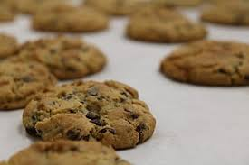

Una de las recetas con marihuana más clásicas es la de las galletas de marihuana, gracias a que para poder elaborarla no es necesario tener grandes conocimientos culinarios, simplemente hacen falta 6 ingredientes, los cuales seguramente ya los tengamos por casa, y un poco de marihuana. En cuanto a los utensilios de cocina, sucede lo mismo, ya que todos tenemos cazos, horno y colador. Por ello si estás pensando en hacer una receta cannábica rápida o si quieres elaborar tu primera receta con cannabis, la elección de las galletas de marihuana es una de las más indicadas.
Receta de galletas de marihuana
La receta de galletas de marihuana que vamos a presentar, está pensada para conseguir alrededor de 40 galletas, las cuales pueden variar dependiendo del tamaño que les demos a cada una de ellas. Por ello y para asegurar que todas contienen el mismo peso y aproximadamente la misma cantidad de marihuana, recomendamos utilizar una balanza de cocina y pesar una a una la masa de cada galleta. Una vez dicho esto y añadido esta breve recomendación, vamos con esta fantFgalletaástica receta para hacer galletas de marihuana.
Ingredientes y materiales necesarios
- 500 ml de agua embotellada
- 130 g de mantequilla cannábica
- 250 g de harina
- 2 huevos
- Saborizante al gusto
- 120 g de azúcar
¿Cómo hacer galletas de marihuana?
Antes de nada, para poder elaborar galletas de marihuana tenemos que elaborar mantequilla cannábica, por ello, a continuación vamos a explicar brevemente cómo hacer mantequilla de marihuana, aunque si ya la tienes hecha, puedes saltarte estos primeros pasos.
- Paso 1: Ponemos a hervir el agua junto con la mantequilla y la mantenemos a fuego medio hasta que se derrita.
- Paso 2: Una vez derretida la mantequilla añadimos la marihuana previamente triturada y vamos removiendo a fuego lento durante 30 minutos sin dejar que hierva, para que suelte todos los cannabinoides.
- Paso 3: Después de ese tiempo hay que colar los restos vegetales con la ayuda de un colador y depositar la mantequilla derretida en un recipiente adecuado.
- Paso 4: Dejamos la mantequilla en la nevera durante el menos 6 horas, después de este tiempo la sacamos de la nevera y con la ayuda de una cuchara vamos retirando el agua de la superficie.
- Paso 5: Dejamos la mantequilla a temperatura ambiente para que sea más manejable y añadimos el azúcar, los huevos y los mezclamos bien, al mismo tiempo que vamos añadiendo la harina sin dejar de remover.
- Paso 6: Una vez la mezcla sea homogénea, es el momento de añadir el saborizante que más nos guste, sin pasarnos.
- Paso 7: Una vez la mezcla sea perfecta, la tapamos con un poco de film y la introducimos en la nevera durante 20 minutos.
- Paso 8: Sacamos la bandeja del horno, colocamos el papel de horno encima y ponemos el horno a pre-calentar a 160°C.
- Paso 10: Una vez las tengamos todas listas, las ponemos en la bandeja del horno y la introducimos durante 15 minutos a 160°C.
Efectos de las galletas de cannabis
Las sensaciones que suele ofrecer el consumo de galletas de marihuana pueden variar dependiendo de varios factores, como; el tipo de cannabis utilizado, si es rico en THC o CBD, la cantidad, el estado personal en el momento del consumo, la propia tolerancia al cannabis y el ambiente en el que lo hagamos. Pero por lo general, suelen ofrecer sensaciones relajantes muy intensas, las cuales copan todo el cuerpo, siendo en muchas ocasiones casi imposible moverse del sofá y poder tener pensamientos o conversaciones coherentes. En el caso de utilizar marihuana rica en CBD, sucede todo lo contrario, ya que al ser un cannabinoide no psicoactivo, los efectos son de cierta calma, relax y bien estar, los cuales son perfectos para el día a día.